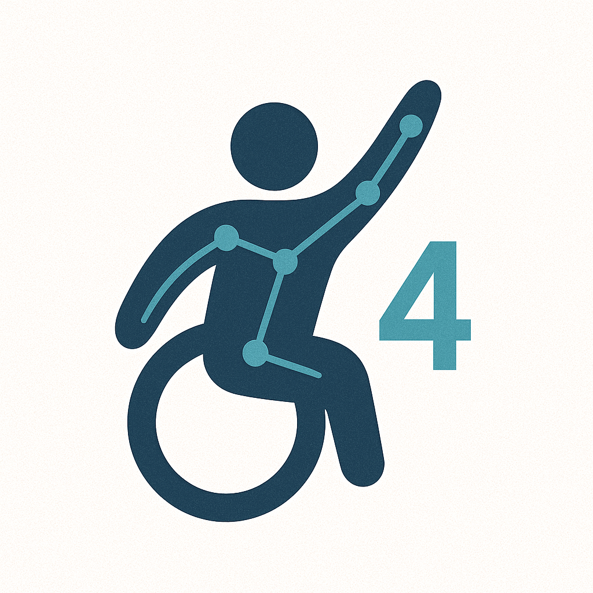
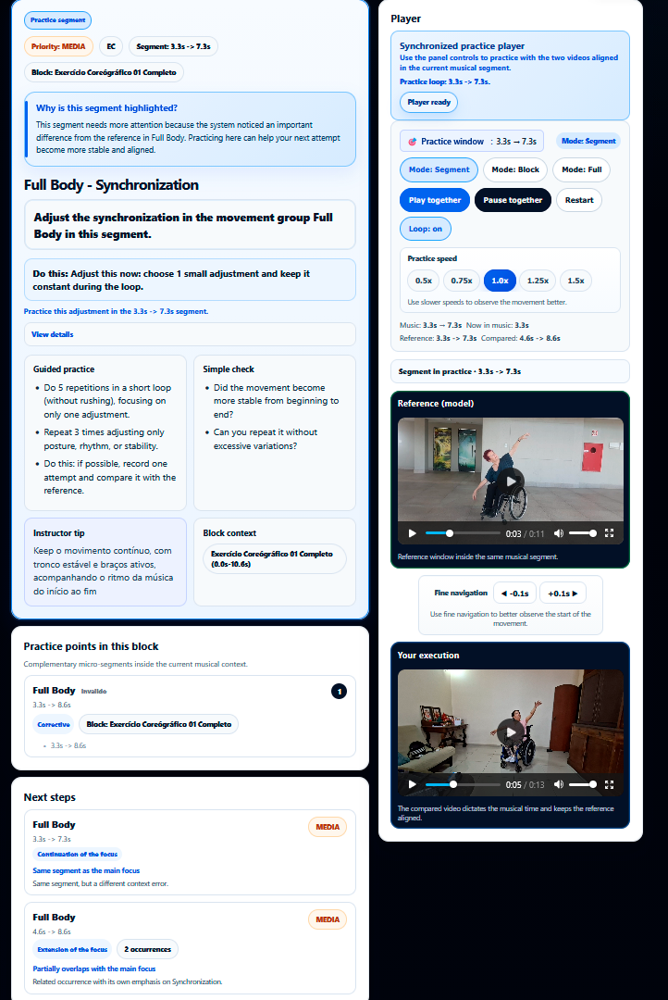

Movement analysis
Structured observation of movement supported by tracking data.

MTS4Dance is an applied research initiative dedicated to developing technological approaches that support pedagogical movement analysis, performance comparison and formative feedback in dance education contexts.
The project places particular emphasis on wheelchair dance, inclusive dance practices and accessibility, while exploring how movement data can support meaningful reflection in teaching and learning processes.
Rather than simply producing technical measurements, MTS4Dance seeks to translate movement-related information into pedagogically relevant insights for real educational settings.
Overview
The project
This section explains the project goals, scope, and educational focus.
MTS4Dance — Motion Tracking System for Dance — investigates how computational approaches may support pedagogical processes in dance education, combining body tracking, performance comparison and structured observation.
The project is particularly committed to wheelchair dance and other inclusive dance contexts, recognising embodied diversity as central to artistic expression, pedagogical reflection and accessible teaching practices.
Instead of focusing on ranking or standardised judgement, the system is designed to support formative feedback, helping educators and learners reflect on practice in contextualised ways.
By integrating education, accessibility, user experience and movement analysis, MTS4Dance contributes to broader discussions on inclusive pedagogy, embodied learning and technology-enhanced dance education.
Structured observation of movement supported by tracking data.
Insights designed to assist teaching and learning processes.
Emphasis on wheelchair dance, accessibility and embodied diversity.
Integration of educational practice, technology and academic research.
How it works
This section summarises the analytical stages, from video recording to pedagogical reporting.
In its current architecture, MTS4Dance organises the analytical process into stages that connect audiovisual records, body tracking, comparative metrics and pedagogical interpretation of performance.
The system works with reference videos and videos of the analysed performance.
Body markers are identified in order to structure temporal movement data.
Measures such as Pearson correlation, Root Mean Square Error (RMSE), movement amplitude, and musical synchronisation support the analysis.
Results are organised into visualisations and reports designed for educational use.
Next step
Explore selected MTS4Dance interfaces that connect pedagogical design, guided practice and analytical feedback.
Platform in Action
This section shows how the platform supports design, guided practice, and analysis.
Selected MTS4Dance interfaces illustrate how the platform supports movement observation, pedagogical interpretation and guided practice in dance education contexts.
MTS4Dance connects pedagogical design, movement execution and analytical feedback into a continuous learning cycle.

Teachers design structured learning scenarios by defining movement groups, organizing musical segments, and controlling how practices are delivered to learners.

The Practice Panel organizes movement-related feedback into actionable guidance, highlighting specific segments that require attention and supporting learners in actively adjusting their performance through structured, repeatable practice aligned with a reference performance.

The Formative Report combines performance indicators with pedagogical interpretation and practice-based evidence, helping connect analytical results with learner engagement and performance development.
Research foundations
This section outlines the main conceptual foundations and the expected educational impact of the project.
Impact
International dissemination
This section highlights selected academic and professional events where MTS4Dance has been presented.
MTS4Dance has been presented in conferences, academic meetings and professional events, contributing to dialogue on education, accessibility, assistive technology and movement analysis.
 Peru · 2021
Peru · 2021
 Virtual · 2022
Virtual · 2022
 Brazil · 2023
Brazil · 2023
 Brazil · 2024
Brazil · 2024
 Brazil · 2025
Brazil · 2025
Team, coordination and collaboration
This section introduces the main academic collaborators involved in the project.
MTS4Dance is being developed within a doctoral research project in Education, combining academic supervision in Brazil and international collaboration within the CAPES PDSE framework.
Doctoral researcher and project lead
PPGE/UFJF · IF Sudeste MG · UAB
Supervisor
PPGE/UFJF
Co-supervisor
PGCC/UFJF
International supervision / PDSE
Universitat Autònoma de Barcelona (UAB)
Contact and collaboration
This section provides contact information and indicates the main areas open to collaboration.
This page serves as an institutional basis for presenting MTS4Dance in academic, collaborative and international contexts.
The project is open to dialogue and collaboration in the fields of dance, wheelchair dance, accessibility, user experience and movement-related technologies.
A multilingual version and an institutional contact form may be incorporated in future stages of the project.
Institutions
MTS4Dance is supported by an institutional network that brings together academic affiliations, international collaboration, strategic partnerships and research support across Brazil and Europe.


Dialog showing an enlarged version of a selected image. Press Escape or use the close button to return to the page.